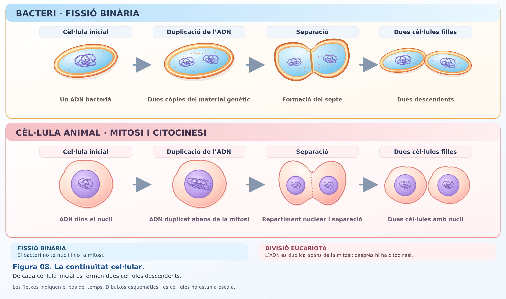
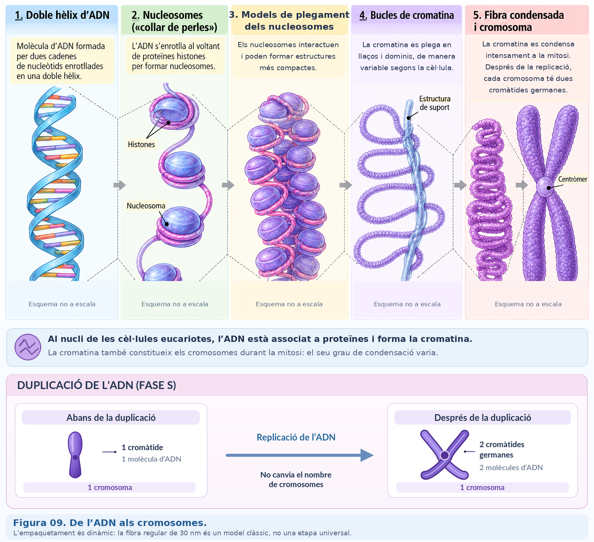
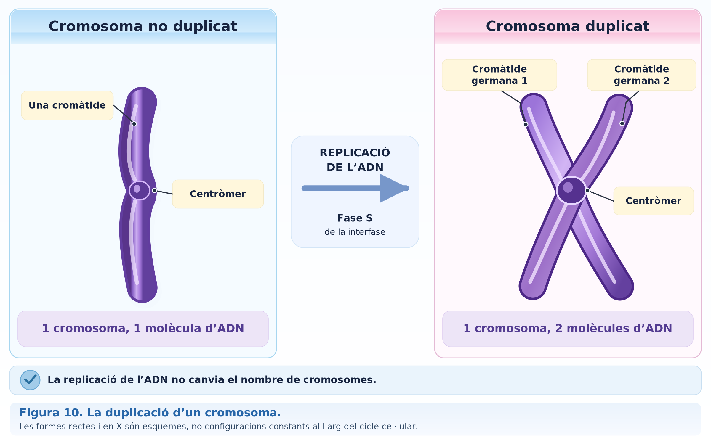
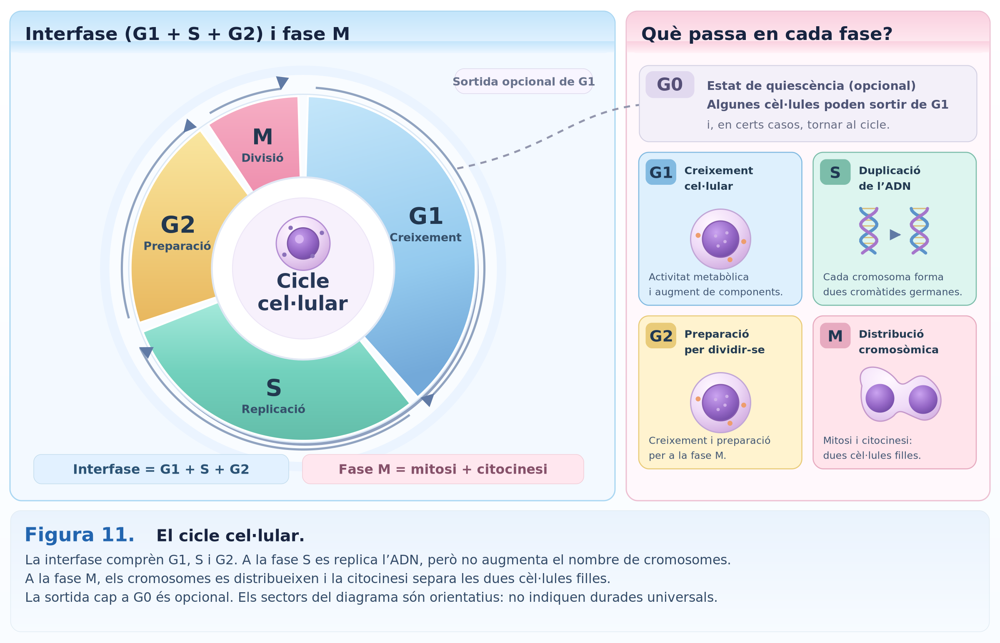
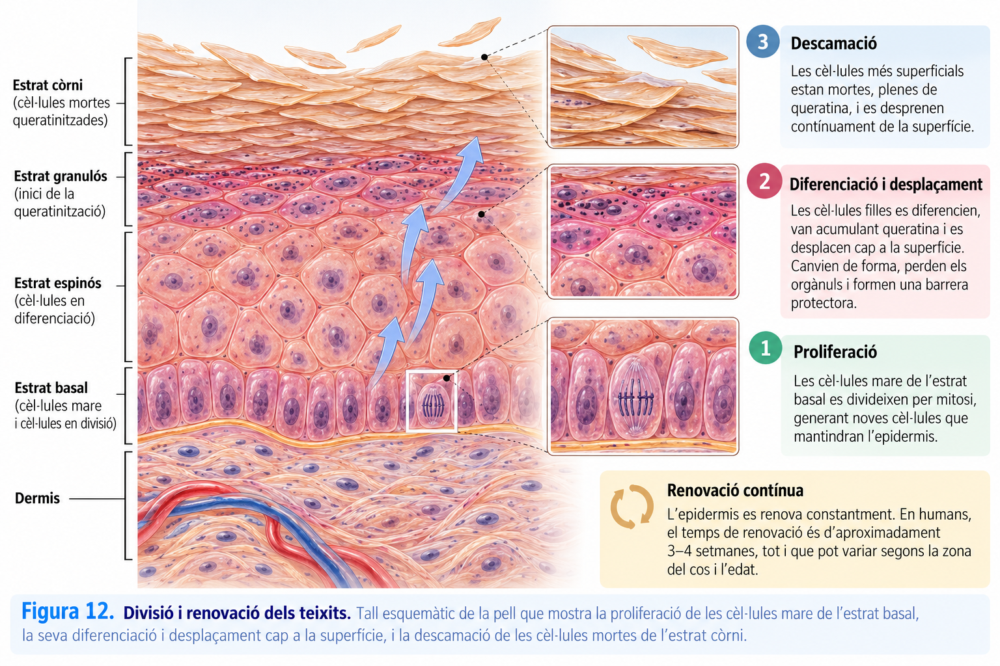

A02 · La continuïtat cel·lular¶
Com pot una cèl·lula originar dues cèl·lules sense perdre la informació genètica?¶

UD02 · La continuïtat cel·lular · Biologia i Geologia · 4t d'ESO
Avui seguirem un problema fonamental: abans de formar cèl·lules noves, la cèl·lula ha de copiar la informació genètica i després distribuir-la. Observarem què són els cromosomes, què passa quan es duplica l'ADN i com s'organitza el cicle cel·lular.
Aquesta pàgina recull el recorregut de la classe i serveix també per recuperar-la si no hi has pogut assistir. Les comprovacions són per aprendre: no cal entregar res.
1 · Tota cèl·lula prové d'una altra cèl·lula¶
Una de les idees de la teoria cel·lular que ja hem conegut és que tota cèl·lula prové d'una altra cèl·lula preexistent.
Observa les dues seqüències de la figura:
- Molts bacteris formen cèl·lules descendents per fissió binària.
- En els organismes pluricel·lulars, la divisió de determinades cèl·lules eucariotes permet créixer i renovar teixits.
Els mecanismes no són idèntics: els bacteris no fan mitosi. Però comparteixen una necessitat: transmetre informació genètica a les cèl·lules descendents.
Si una cèl·lula es divideix, quin problema ha de resoldre per donar continuïtat a la vida?
2 · On és la informació que s'ha de transmetre?¶
L'ADN conté la informació genètica. A les cèl·lules eucariotes, la major part és dins el nucli, associat a proteïnes: aquest conjunt s'anomena cromatina.
Un cromosoma és una estructura d'ADN associat a proteïnes. Durant el cicle cel·lular, la cromatina pot estar més o menys compactada; quan s'inicia la divisió nuclear, els cromosomes es condensen i solen ser més fàcils de distingir.

Idea clau: l'ADN no «es converteix» en una substància diferent quan apareixen cromosomes visibles. Canvia sobretot el grau de compactació de l'ADN associat a proteïnes.
Per situar-nos: una cèl·lula somàtica humana amb un nucli diploide normal té 46 cromosomes, organitzats en 23 parelles. El nombre no és una mesura de la complexitat de l'espècie.
3 · Primer copiar: la duplicació de l'ADN¶
Abans d'una divisió mitòtica típica, l'ADN es replica. Després de la duplicació, cada cromosoma té dues cromàtides germanes, unides a la regió del centròmer. Cada cromàtide conté una molècula d'ADN.

| En una cèl·lula somàtica humana típica | Abans de duplicar l'ADN | Després de duplicar l'ADN |
|---|---|---|
| Cromosomes | 46 | 46 |
| Cromàtides | 46 | 92 |
| Molècules d'ADN nuclear | 46 | 92 |
Atenció: duplicar l'ADN no significa duplicar el nombre de cromosomes. Cada cromosoma duplicat continua comptant com un cromosoma mentre les dues cromàtides germanes romanen unides.
Una cèl·lula té 4 cromosomes abans de la replicació. Just després de replicar l'ADN, quants cromosomes i quantes cromàtides té?
4 · Quan copia l'ADN? El cicle cel·lular¶
Les cèl·lules no es divideixen contínuament. En el cicle mitòtic d'una cèl·lula eucariota que es divideix, distingim la interfase i la fase M.

- G1 (interfase): la cèl·lula creix i desenvolupa les seves funcions.
- S (interfase): es duplica l'ADN.
- G2 (interfase): continua la preparació per a la divisió.
- M: es produeix la mitosi, que distribueix els cromosomes entre els nuclis descendents, i habitualment la citocinesi, que separa el citoplasma.
Algunes cèl·lules passen a un estat G0, en què continuen funcionant sense dividir-se. La durada de les fases depèn del tipus de cèl·lula i de les condicions.
Quina afirmació situa correctament dos processos del cicle cel·lular?
5 · Per què la divisió ha d'estar controlada?¶
En un organisme pluricel·lular, les divisions han de respondre a les necessitats dels teixits. Algunes cèl·lules es divideixen per contribuir a la renovació; d'altres, com moltes neurones madures, habitualment no ho fan.

No totes les cèl·lules del teixit es divideixen alhora. El cicle està regulat per mecanismes que controlen si les condicions són adequades i contribueixen a evitar errors en la duplicació o distribució de l'ADN.
Una proliferació cel·lular descontrolada és una característica del càncer, encara que per originar un tumor hi intervenen altres alteracions.
Per pensar-ho: per què seria problemàtic que totes les cèl·lules d'un teixit es dividissin permanentment, independentment de les necessitats de l'organisme?
6 · Què hauries de saber explicar ara?¶
- Per què les cèl·lules noves han de rebre informació genètica.
- Com es relacionen ADN, cromatina, cromosomes i cromàtides.
- Per què després de replicar l'ADN hi ha el mateix nombre de cromosomes, però el doble de cromàtides.
- Quan es duplica l'ADN i quan es distribueixen els cromosomes al llarg del cicle cel·lular.
- Per què el control de la divisió és important per als teixits.
Si no has vengut a classe: segueix aquestes seccions en ordre, observa les figures F08–F12 i respon les tres comprovacions interactives. Després consulta el bloc 2 del material guia de la UD02, on trobaràs les explicacions completes.
No cal lliurar res d'aquesta activitat. La pàgina és una guia de l'explicació i un recurs de consulta i repàs.
Pròximament: estudiarem com es reparteixen físicament els cromosomes durant la mitosi, que és el centre del bloc 3.